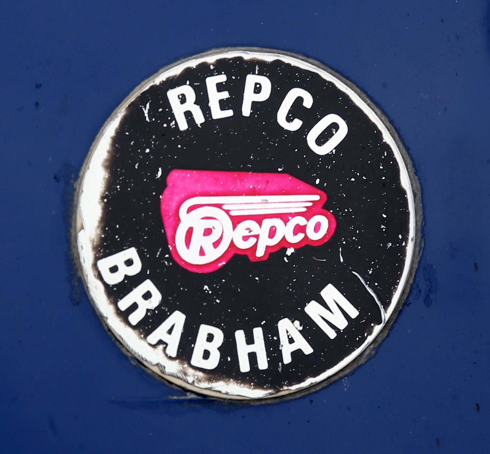

대표 로고대표 브랜드 마크
대표 로고대표 브랜드 마크렙코 Repco
렙코(Repco)는 1922년 호주 멜버른에서 시작한 자동차 부품·애프터마켓 소매 체인이다. 호주·뉴질랜드에 다수 매장을 둔 대표적 자동차 부품 소매업체다.
최종 업데이트
렙코는 어떤 브랜드인가
렙코(Repco)는 1922년 호주 멜버른에서 시작한 자동차 부품·애프터마켓 소매 체인이다. 호주·뉴질랜드에 다수 매장을 둔 대표적 자동차 부품 소매업체다.
렙코는 어떻게 봐야 할까
렙코는 호주·뉴질랜드를 대표하는 자동차 부품 애프터마켓 소매 체인이다. 설립·운영 주체, 업태, 시장 포지션을 함께 보면 모빌리티 안에서의 위치가 또렷해진다.
렙코는 어떻게 시작되고 성장했나
1922년 멜버른에서 자동차 부품 사업으로 출발해 1937년 렙코 리미티드로 통합됐다. 1960년대에는 브라밤 F1 팀에 엔진을 공급해 1966년 챔피언십 우승 엔진을 만든 이력도 있다.
렙코의 브랜드 아이덴티티는 무엇인가
1922년 설립된 호주 자동차 부품 소매 기업으로, 사명은 교체용 부품 회사를 뜻하는 영문 약어에서 나왔다. 2024년 멜버른의 한 광고 대행사와 협업해 100여 년 만에 로고와 슬로건을 새로 다듬었으며, 새 구호로 차를 향한 고객의 열정을 강조했다.
갱신된 로고에는 1960년대 잭 브라밤의 우승 차량 엔진음을 표본화해 만든 회전 효과를 더했다.
렙코의 대표 제품과 서비스는 무엇인가
자동차 부품·애프터마켓 액세서리를 소매한다. 정비·교체 부품이 핵심이다.
렙코는 지금 어떤 상태인가
렙코 로고는 어떻게 변해왔나
대표 로고대표 브랜드 마크
대표 로고 1보관 이미지 1자주 묻는 질문
렙코는 어느 나라 브랜드인가요?
렙코는 호주의 모빌리티 브랜드입니다.
렙코는 언제 설립되었나요?
렙코는 1922년 설립되었습니다.
렙코의 브랜드 아이덴티티는 무엇인가요?
1922년 설립된 호주 자동차 부품 소매 기업으로, 사명은 교체용 부품 회사를 뜻하는 영문 약어에서 나왔다.
렙코의 대표 제품은 무엇인가요?
자동차 부품·애프터마켓 액세서리를 소매한다.
렙코는 현재 어떤 상태인가요?
국가: 호주(멜버른); 산업: 모빌리티
렙코의 본사는 어디에 있나요?
렙코의 본사는 Rowville에 있습니다(위키데이터 기준).
렙코의 모기업은 어디인가요?
렙코의 모기업은 Genuine Parts Company입니다(위키데이터 기준).
출처와 검증
렙코 관련 참고: 공식 웹사이트 · 위키데이터 Q173425 · 영어 위키백과. 브랜드명은 한글과 원어를 함께 표기하되 데이터에 없는 표기는 만들지 않습니다. 기원 국가·설립연도는 검수된 정의문에서 확인된 값을 우선하고, 없을 때만 공식 웹사이트 URL이 일치하는 위키데이터 개체의 값을 씁니다. 위키데이터 값은 2026-09-07 기준입니다.